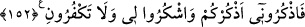

Çünkü o, amele bağlıdır. Bununla beraber düşüncedeki önceliğine bakılarak ilk önce
zikredilmiştir.
“O peygamber size bilmediğiniz şeyleri öğretir.”
Rağıb el-Isfahânî şöyle der: “Bilmediğimiz şeylerden maksad, kitap ve hikmet değil,
ancak peygamberlere gelen vahiy yoluyla bilinebilen ve başka türlü öğrenilmesi
mümkün olmayan bilgilerdir. Kitap ve hikmetten maksad ise, kısmen de olsa, akıl
yardımıyla anlaşılabilecek şeylerdir. Bilmediğimiz şeylerin, yukarıda zikri geçen kitap
ve hikmet bilgisinden farklı olduğunu belirtmek için ( ) “size öğretir” ibâresi
özellikle tekrar edilmiştir.
152. Öyle ise siz beni (ibâdetle) anın ki ben de sizi anayım. Bana şükredin; sakın
bana nankörlük etmeyin!
Ey mü’minler! Beni tâatla anın ki, Ben de sizi sevap, lütuf, ihsân, hayır ve saâdet
kapılarını açmak sûretiyle anayım. Peygamber Efendimiz (s.a.) şöyle buyurmuştur:
“Allah’a itaat eden kimse, namazı, orucu ve Kur’ân-ı Kerîm tilâveti az dahi olsa,
O’nu zikretmiştir. Allah’a isyân eden ise, namazı ve kırâatı çok olsa bile, O’nu
unutmuştur.”[35]
Unutulan bir şeyin hatırlanması mânâsına gelen “zikir” unutmaktan münezzeh olan
Allah için, mecâz olarak kullanılmıştır ve “Allah kulunun kendisini anmasına karşılıkta
bulunur.” anlamını taşımaktadır.
Size verdiğim nimetler sebebiyle “Bana şükredin.” Allah’ı tâat ile anmak, şükrün tâ
kendisidir. Binâenaleyh ikinci kez “Bana şükredin” emriyle, size olan iyiliğim ve
ihsânım sebebiyle başkasına değil, yalnız bana şükredin mânâsı kasdedilmiştir.
et-Teysîr isimli kitabın sâhibi, zikrin dil ile; şükrün ise amel ile olacağını söylemiştir.
Rağıb el-Isfahânî şöyle demiştir: ( ) ile ( ) ifâdesi arasında ne fark
vardır? sorusuna şöyle cevap verilebilir: ( ) “Sen Zeyd’in sana olan iyiliğine
teşekkür edip bu sebeple onu övdün.” mânâsına gelirken; ( ) “Fiillerine
bakmaksızın onun zâtını zikredip övdün” anlamını taşır. İkinci ifâde birincisinden daha
beliğ olduğu halde Allah Teâlâ’nın ( ) değil de “lâm” ile ( ) buyurması,
kullarının, bırak kendi zâtını, nimetlerini dahi anlatmaktan âciz olduklarını bildiği
içindir. Dolayısıyla Allah: “Eğer Allah’ın nimetini saymaya kalksanız
sayamazsınız.” (İbrâhîm: 14/34) buyurmuş ve kullarına, kendisine şükretmeleri
konusunda sadece bir kısım fiillerini itibâra almalarını emretmiştir.
“Sakın (emrime isyan etmek ve nimetlerimi inkâr etmek sûretiyle) bana nankörlük
etmeyin.”